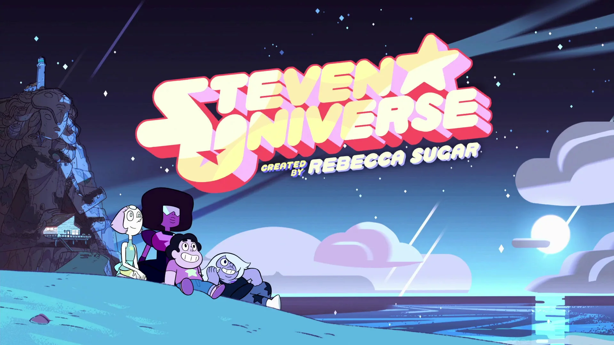

"Вселенная Стивена" — это анимационный сериал, который покорил сердца зрителей по всему миру. Он рассказывает о приключениях мальчика по имени Стивен, который живет с могущественными космическими существами, известными как Кристальные Самоцветы.
Сюжет сосредоточен на Стивене и его друзьях, которые защищают Землю от различных угроз, одновременно изучая тайны своего прошлого и наследия. Это история о дружбе, семье и самопознании.
Кристальные Самоцветы — Гарнет, Аметист и Жемчуг — играют важные роли в жизни Стивена. Каждый персонаж обладает уникальными способностями и личными историями, которые раскрываются по мере развития сюжета.
Мультсериал поднимает темы принятия, любви, идентичности и важности общения. Он учит зрителей быть добрыми и смелыми, даже в трудные времена.
Создателем сериала является Ребекка Шугар, первая женщина-режиссер в истории Cartoon Network. Саундтрек сериала стал культовым, а песни из него вдохновляют миллионы людей.
